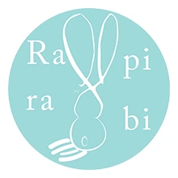
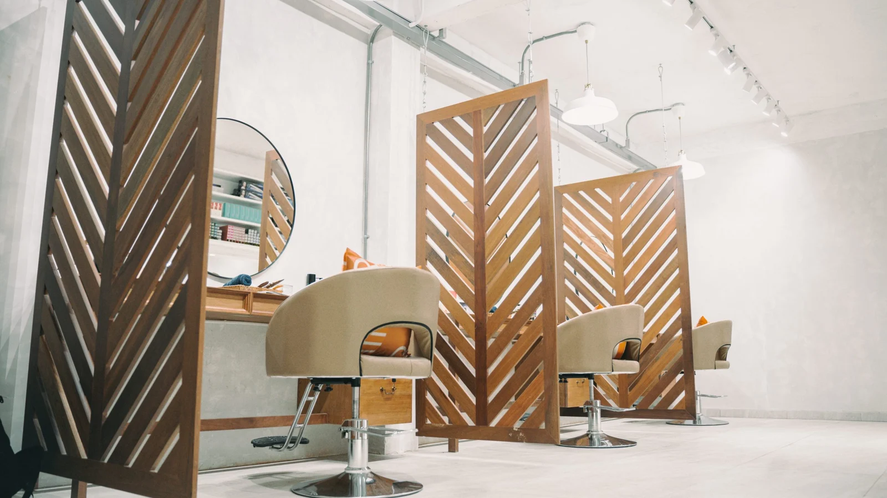
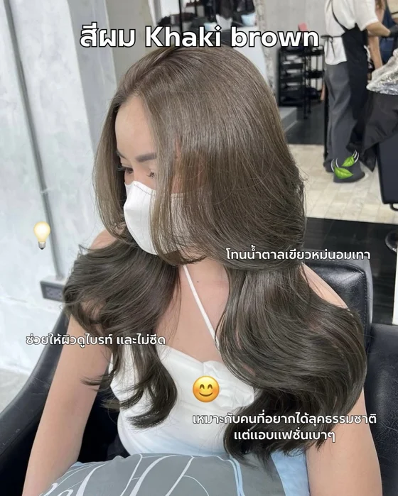
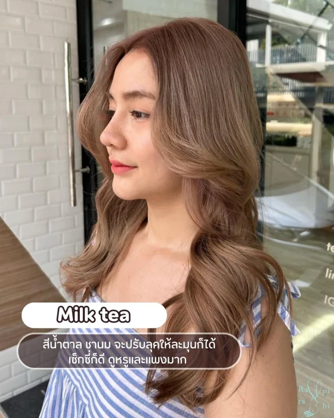
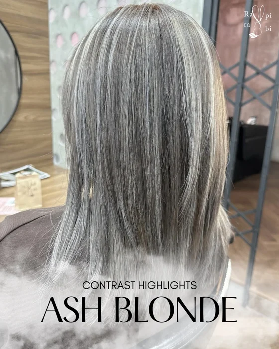
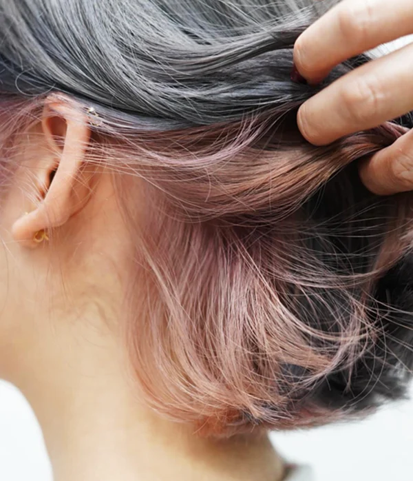
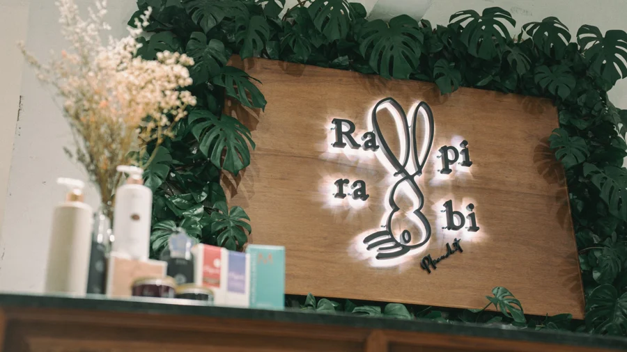
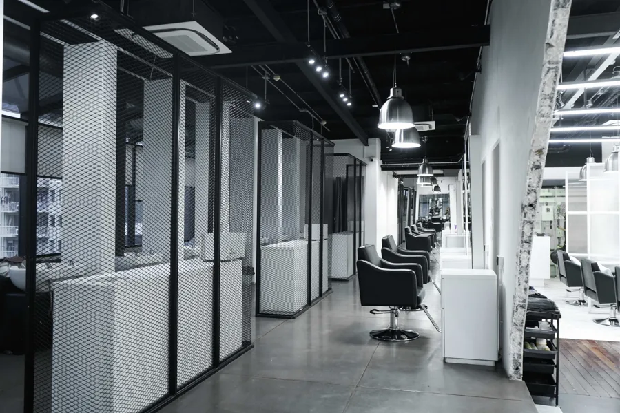

HAIR COLOR TRENDS / 2026.02.08
Pantone 2026
ヘアカラートレンド
เทรนด์สีผมตาม Pantone 2026
By Rapi-rabi

Rapi-rabiCOLOR FOR LIFE Instagram ↗公式アカウントJAPANESE HAIR COLOR SALON · THAILAND
約600色以上から、あなただけのカラーを。
髪に寄り添う、日本式のヘアカラー専門サロン。

01 / COLOR COLLECTION
ラピラビのヘアカラーコレクション。
なりたいイメージを、見つけて。



掲載写真はラピラビのヘアカラートレンドより。
Instagram を見る ↗HAIR COLOR TRENDS / 2026.02.08
เทรนด์สีผมตาม Pantone 2026
By Rapi-rabi

02 / ABOUT RAPI-RABI
髪の状態をしっかり把握しながら、
ダメージを最小限に抑える薬剤を選ぶ。
それが、ラピラビのこだわりです。
約600色以上のヘアカラー薬剤を自由自在に操り、
ひとりひとりのためのオリジナルカラーを。
あなたのライフスタイルに寄り添います。
04 / OUR COLORISTS
日本基準の厳しいテストに、連続で合格した
ラピラビカラーリスト。
カウンセリングを大切にしながら、
今までで最高のヘアカラーを見つけるために、
日々トレーニングを重ねています。

05 / FIND YOUR RAPI-RABI
タイ10店舗。店舗を選んでご予約へ。
営業時間はタイ時間（UTC+7）
店舗を選ぶ 10 STORES
受付状況は営業時間からの自動表示です。
空き状況・最終受付・臨時休業は店舗へお問い合わせください。

01 / 10Rapi-rabi Thonglor
ACCESS / Rapi-rabi Thonglor
Google マップで開く ↗地図はインターネット接続時に表示されます。
EN / CONTACT
Hair color salon · 10 locations in Thailand.
Select a branch above for its address, opening hours, phone number and LINE booking link. All times are in Thailand (UTC+7).
TH / ติดต่อเรา
เลือกสาขาด้านบนเพื่อดูที่อยู่ เวลาเปิดทำการ เบอร์โทรศัพท์ และลิงก์ LINE สำหรับจองคิว เวลาทั้งหมดเป็นเวลาประเทศไทย
เลือกสาขา ↑